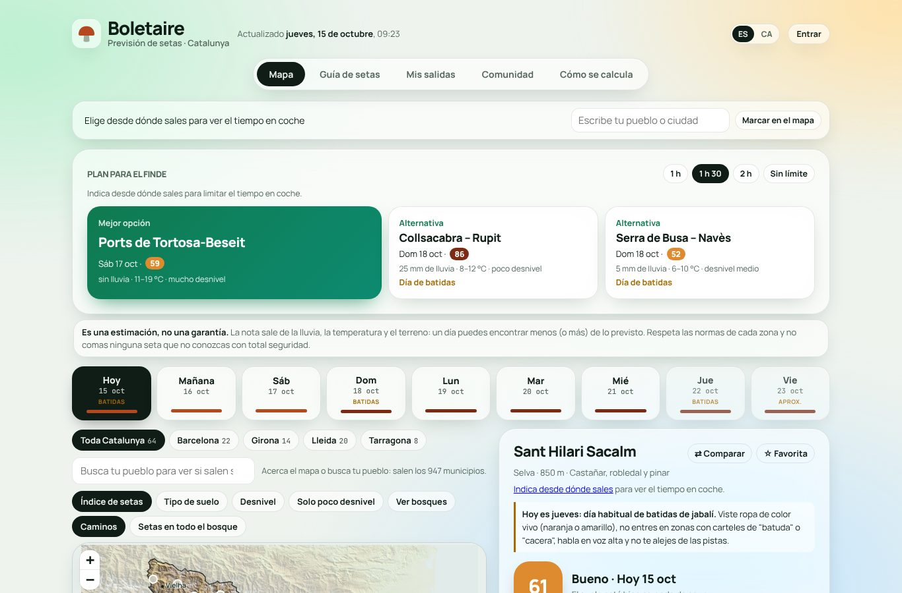
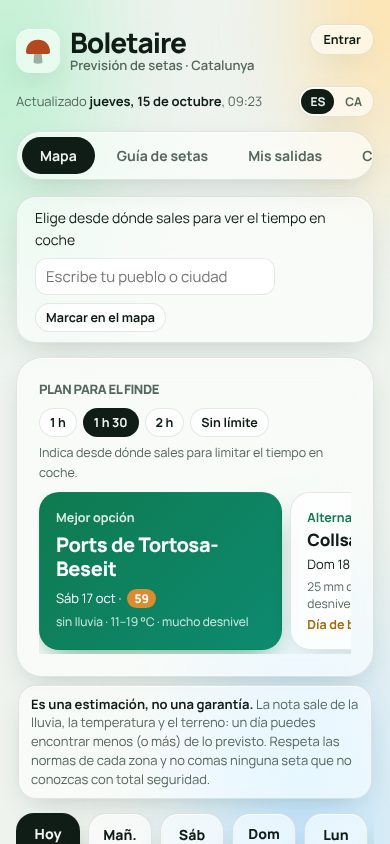
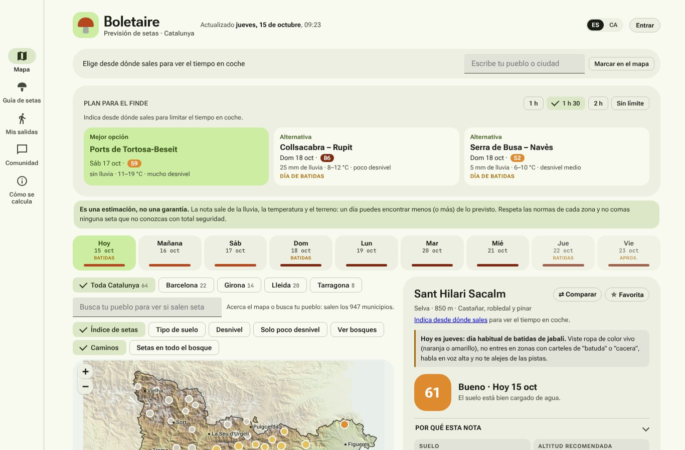
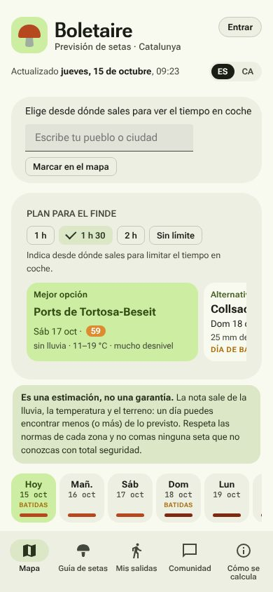
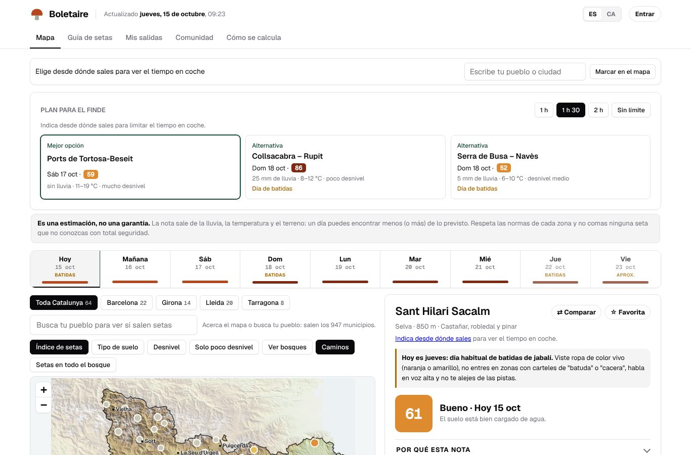
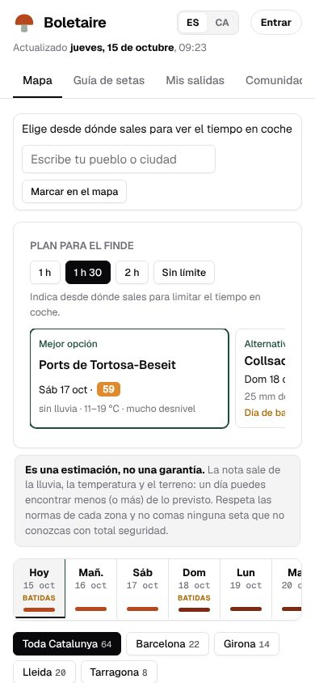
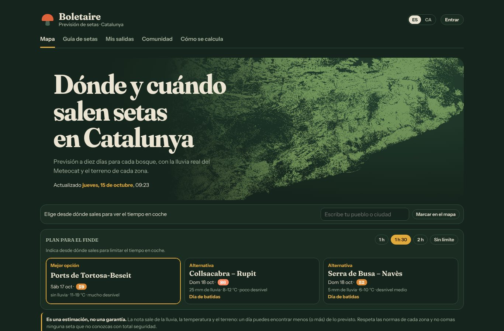
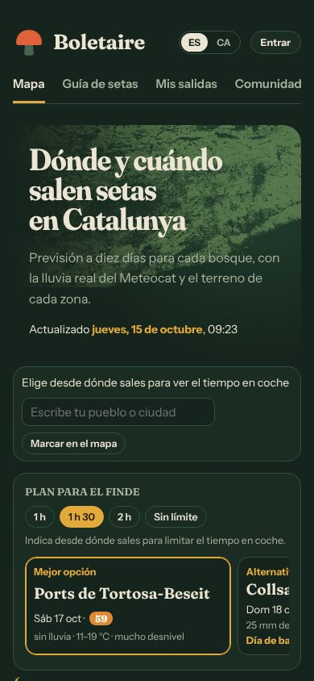
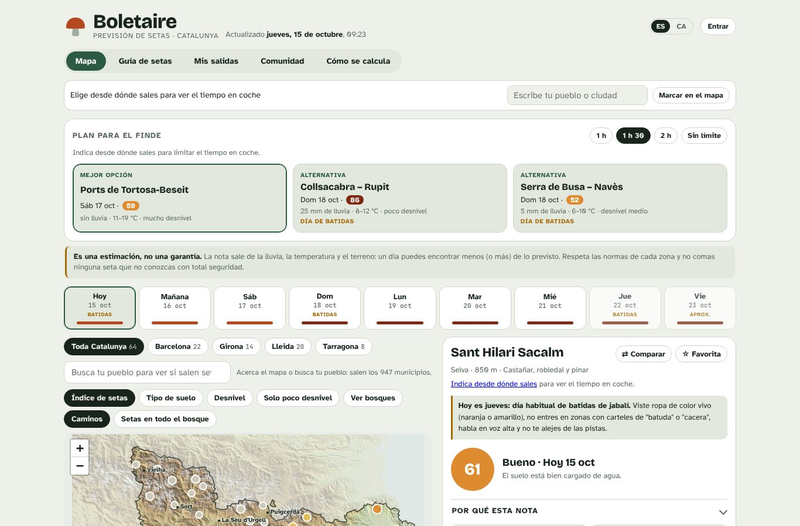
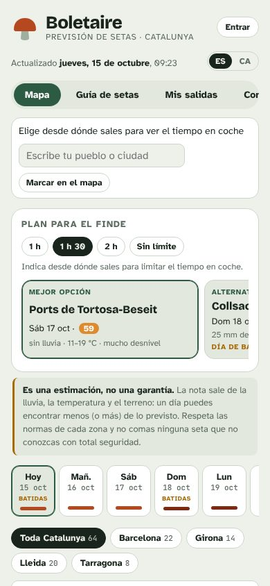

Elige el diseño de Boletaire
Cuatro plantillas con la app completa dentro: mismo mapa, misma previsión y mismas secciones. Ábrelas, navega un rato y quédate con la que más te guste. Abajo del todo, en cada una, hay una barra para saltar de una a otra.
Cristal
Estilo actual de apps: cristal esmerilado, mosaico (bento) y letra Manrope
La más moderna: paneles translúcidos sobre un degradado de color que se mueve muy despacio, menú flotante en pastilla y la mejor zona del finde destacada en grande.
- El menú se queda flotando arriba al bajar.
- Fundido suave al cambiar de sección.
- Modo claro y oscuro según el teléfono.


Musgo
Basada en Material Design 3 de Google (licencia Apache 2.0)
Se siente como una app de Android: tarjetas verdes sin bordes, esquinas muy redondeadas y menú con iconos.
- En el móvil, el menú pasa a una barra abajo, al alcance del pulgar.
- En el ordenador, el menú queda fijo a la izquierda.
- Modo claro y oscuro según el teléfono.


Pizarra
Basada en shadcn/ui (licencia MIT) con la letra Geist
Limpia y precisa, como las webs de herramientas modernas: blanco, líneas finas y negro para lo importante.
- Cabecera fija con las secciones como pestañas, siempre visible al bajar.
- Los nueve días forman una sola tira compacta.
- Modo claro y oscuro según el teléfono.


Sotobosque
Estilo revista de naturaleza, inspirada en las plantillas editoriales de HTML5 UP (CC BY 3.0)
Oscura y con carácter: titulares con serifa, dorado de rebozuelo y una portada con el mapa real de los bosques de Catalunya.
- Portada grande solo en la sección del mapa.
- Siempre en oscuro, también de día.
- La que más llama la atención al compartirla.


Diseño actual
Lo que hay ahora en boletscat.github.io
Para comparar.

